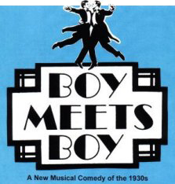

|
 |
 |
 |
 |
 |
 |
"The only duty we have to history is to rewrite it." -- Oscar Wilde

Back in 1975 no one had ever seen anything like BOY MEETS BOY. Other gay musicals followed it, but for sheer fun and ground-breaking audacity, it still stands alone.
This hit Off Broadway musical, with book by Bill Solly and Donald Ward, and music and lyrics by Bill Solly, pays homage to the screwball romantic comedies of 1930s Hollywood, but with a twist.
The year is 1936, the place is prim-and-proper London, yet in the society wedding of the year - breathlessly covered by all the newspapers - the happy couple consists of two men. The fact that no one finds this in any way unusual leaves the musical free to deal, not with angst and depression, but with fast-moving intrigue, high spirits and the universal problems that might beset any two people who fall in love.
When handsome foreign correspondent Casey O'Brien misses out on the story of the decade - the Abdication - he focuses instead on the nuptials of Boston millionaire Clarence Cutler, whose intended is a British aristocrat, the Honourable Guy Rose. Casey's rival newsmen fool him into thinking the mousy Guy is a famous beauty ("The English Rose"). Then when the latter fails to turn up at the church, Casey turns the jilting into a sensational headline, and has to come up with a photograph to back up his story. Meanwhile, the real Guy is right under Casey's nose, trying to live up to his legend. The mismatched pair eventually form a bond with memories of the Boy Scouts ("It's a Boy's Life"), and then true love produces a magical transformation ("You're Beautiful"). Later the action moves from London to Paris, and Guy's aunt Josephine, the racy star of Les Folies de Paris, which features a female chorus line - and male strippers.
The score features one exquisite song after another: from the famous ballad "Does Anybody Love You?", to the bright "Let"s!", a Folies Bergeres number "It's a Dolly" and the ironic duet, "Giving it Up For Love".
Despite the authors' daring reworking of history, the background of the musical remains that of a normal world. In the cast of 13 there are also 5 women, all of whom have plenty to do.
Production enquiries should be addressed to:Â
Bill Solly
wsolly@gmail.com
Click here for reviews of the 2012 UK Premiere of Boy Meets Boy
"Beautiful music! A fresh idea -
the best work in this vernacular
since The Boy Friend."
Martin Gottfried, New York Post
"A hit! One of the freshest, warmest, funniest theatrical experiences.
By all means, go!"
Bill Zakariasen, New York Daily News
"An uncommonly light and antic touch. The first of its kind that could happily play in an old ladies' home in Dubuque. Quite honorably delightful."
Alan Rich, New York
"The brightest, tunefullest, wittiest, most elegant, refined, gracious and entertaining musical in years!
VVVV (Highest rating)"
Carll Tucker, The Village Voice
"We may all rejoice. Hilarious, delicious, a musical done with wit, charm and plenty of tongue-in-cheek." Sylvie Drake, Los Angeles Times
"Sublime smash hit! There are even
girls in the show so what more
can you want? The wit here is infectious, the style keen!"
Ray Loynd, L.A. Herald-Examiner
"A delightful evening. Super-slick,
super-pro, clever and witty!"
Bill Edwards, Daily Variety
"The music and lyrics, crafted by Bill Solly, are reminiscent of Cole Porter's fiendish cleverness. On one level Boy Meets Boy is a skilled exercise in nostalgia, but it gains added significance from the fact that its two romantic leads are men. Boy Meets
Boy is magical because its calm
and amusing acceptance of its
heroes is pure illusion, sad to say
but great fun to see."
Edmund White
"Boy Meets Boy is one of the most audacious, boldest, shockingly original theatrical gestures in the history of the art. It rewrites the past and presents it just as entertainment, not in the Orwellian sense of trying to convince anyone the past was like that but saying that it ought to have been."
Robert Patrick
"Outrageously high camp at an exceptionally fast pace. Can a straight appreciate it? The answer is yes!"
Regis Philbin, ABC TV, Los Angeles